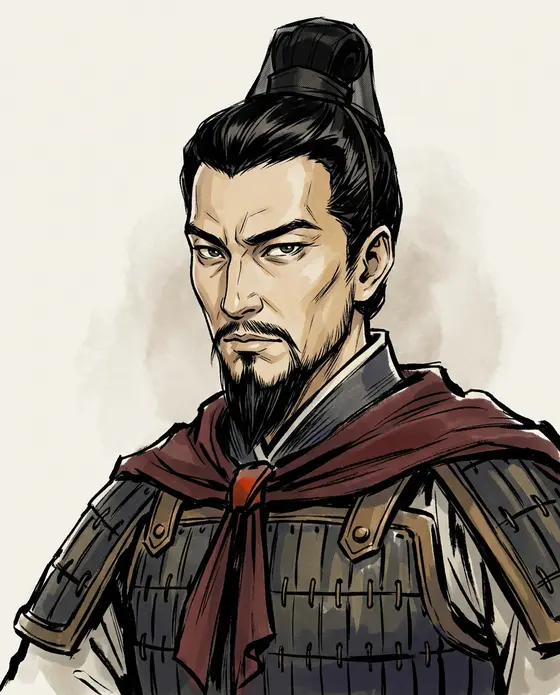
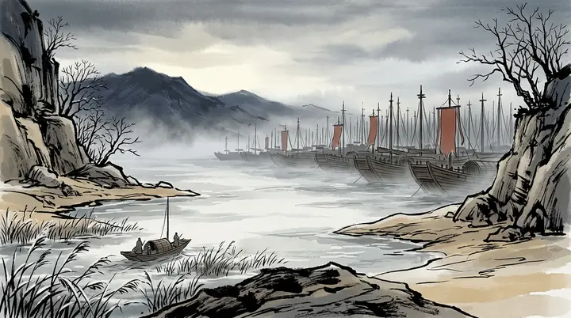
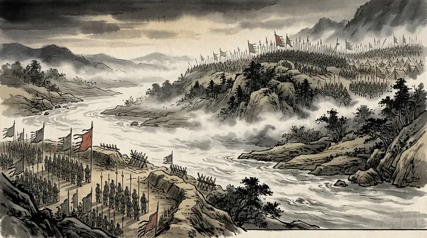
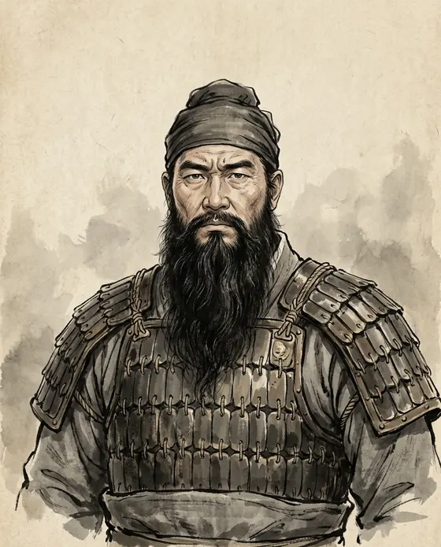

Cao Cao曹操
155–220
Chancellor of Han and master of the north. Poet, administrator, and the man the novel made its villain.
The empire breaks in three; the stories never stopped. The states were proclaimed from 220; the war that made them began in the last years of Han, and that is where our episodes start.





